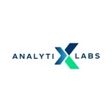

Five years of product across enterprise data platforms, industrial SaaS and public-sector operations. I take the spreadsheet somebody rebuilds every Monday and replace it with a product they open every morning — discovery first, instrumented on day one, every release closed out with a number.
Blank page to five signed enterprise accounts as the only PM — data model and metric dictionary agreed with finance before a screen was designed, then seven modules shipped against it.
Three shipped AI surfaces and an agent prototype where the model translates but never computes — so a wrong answer is a structural impossibility rather than a prompt instruction. Thresholds set for precision; a human kept in the loop because somebody has to own a wrong answer.
Instrumentation before argument, and every number on this page carries the method that produced it — instrument, window, comparison. Friction ranked by users lost rather than by opinion, which ended a two-quarter debate and moved conversion, adoption and revenue.
Five years across three very different B2B products — an enterprise data intelligence platform, an industrial operating system for manufacturing plants, and a state-scale public data programme. Different markets, one craft: find where the decision is actually made, work out why people trust their own spreadsheet more than the system, and build the thing that replaces it.
Most recently I took a platform from a blank page to five signed enterprise accounts as its only PM — defining the data model and metric dictionary with finance before a screen was designed, then shipping seven modules against it. Before that I owned a multi-module roadmap through 100+ features, lifting adoption 35% YoY and annual revenue 20%.
The AI work is what I care most about now, and I treat it as production judgement rather than a feature label. Three of the seven cases here are AI surfaces: generation constrained to pre-computed indices so a read-out cannot be confidently wrong, an alert threshold set for precision because a muted channel is a dead feature, and an agent whose only capability is one typed tool — it translates a question into a filter state and never computes a figure itself. I care more about where the guardrail sits than about which model is behind it.
I write case studies the way I would defend a decision in review — the constraint, the option I rejected, the tradeoff I accepted, the number it moved, and what I would do differently.
Discovery with the people doing the manual version. The spreadsheet they built for themselves is the specification — including the parts they are embarrassed by.
Metric dictionary and entity grain settled with finance and data before a screen is designed. Numbers that disagree across screens kill adoption faster than missing features.
Each release completes a whole decision rather than a third of three. Instrumented on day one, measured against the manual baseline it replaced.
Four from the platform I own now — including the agent prototype — two from an industrial SaaS roadmap, one from operations at state scale. Open any card for the full case — context, constraints, the option I rejected, the tradeoff I accepted, the measured impact, and what I'd do differently. Product screens are from the live tool with commercial figures blurred.
On verifying these numbers. Every case carries a How this was measured note — the instrument, the window and the comparison basis — so you can judge the method rather than take the figure on trust. Percentages are given instead of absolute revenue and volumes because those are commercially confidential; where a number was reported to me rather than computed by me, the note says so. I am happy to walk through the underlying boards, dashboards and PRDs in an interview.
Three organisations, three very different scales of operation — an enterprise platform built from nothing, a multi-module industrial roadmap, and a public programme run across 82 towns.

CertificationOpen to product roles and interesting conversations — 0→1 builds, data platforms, AI in the workflow, and anything where the current answer is a spreadsheet someone rebuilds every Monday.